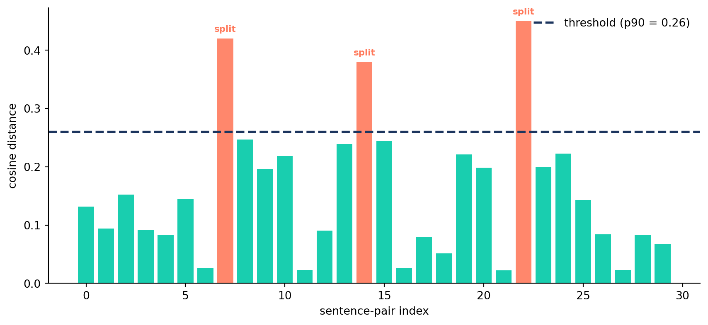
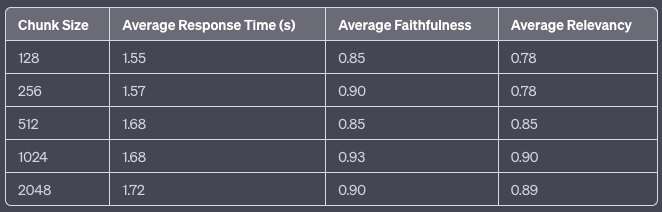
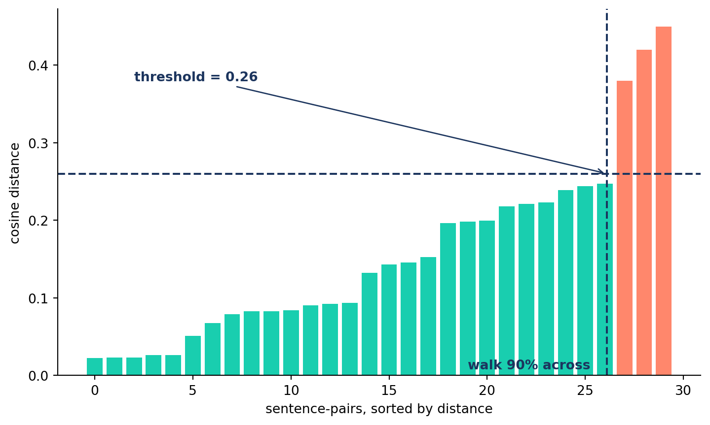
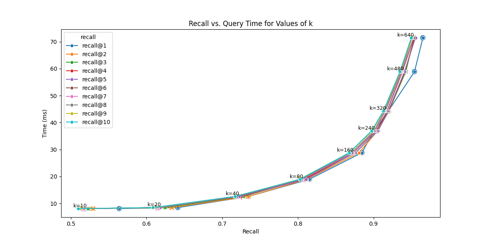
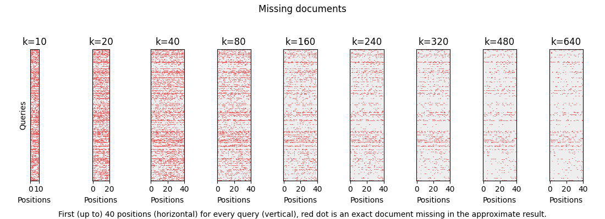

Retrieval for Agents
SDA-AIE-311 — Session 5
2026-11-10
A. Why Chunking Matters
Agenda
- A. Why Chunking Matters — The foundational trade-off
- B. Fixed-Size Chunking — The baseline approach
- C. Document-Aware Chunking — Respecting structure
- D. Semantic Chunking — Grouping by meaning
- E. Vector Store Landscape — Where vectors live
- F. Indexing: Brute Force → ANN — Why search needs an index
- G. Vector Store Manager — Building the storage layer
- H. The RAG Service — Retrieve → Augment → Generate
One of the most impactful decisions in RAG quality
The Library Analogy
Chunks Too Small
Like tearing pages in half and filing them separately.
- Retriever finds a fragment
- Missing context and meaning
- LLM can’t make sense of it
Chunks Too Large
Like filing whole chapters together.
- Retriever returns a heavy tome
- Answer buried in irrelevant text
- Wastes tokens and increases cost
The Goal
The optimal chunk is the smallest unit that contains a complete, self-contained idea.
Chunk Size Trade-off

SOURCE: LlamaIndex Blog. Empirical results showing how chunk size affects response time, faithfulness, and relevancy.
The Complete Idea Rule
Golden Rule of Chunking
A chunk should be meaningful on its own. If someone read only that chunk, would they understand the point?
- For a research paper → a section or subsection
- For a legal contract → a clause
- For code → a complete function
Production Tip: Always log your average chunk size and count. A sudden spike can indicate a formatting issue in your source data.
B. Fixed-Size Chunking
The fast, deterministic baseline
How It Works
Full Document (10,000 chars)
→
Chunk 1 (0-500)
Chunk 2 (400-900)
Chunk 3 (800-1300)
… (overlap)
Key parameters: chunk_size (characters) and chunk_overlap (sliding window)
Sliding Window
Document: |████████████████████████████████████████|
Chunk 1: |████████| chunk_size = 500
Chunk 2: |████████| overlap = 100
Chunk 3: |████████|
Chunk 4: |████████|Why overlap?
- Prevents ideas from being cut at boundaries
- Chunk 1 ends mid-sentence → overlap captures the rest in Chunk 2
- Typical overlap: 10-20% of chunk size
Code: FixedSizeChunker
class FixedSizeChunker(BaseChunker):
"""Splits text into fixed-size chunks with overlap."""
def chunk_document(self, document_text, metadata=None):
chunks = []
step_size = self.chunk_size - self.chunk_overlap
start = 0
while start < len(document_text):
end = min(start + self.chunk_size, len(document_text))
chunk_text = document_text[start:end]
if chunk_text.strip():
chunks.append(self._create_chunk_dict(
chunk_text, metadata, len(chunks)))
start += step_size
return chunksWhen Fixed-Size Works
| Scenario | Why It Works |
|---|---|
| Uniform text (news articles, chat logs) | Consistent structure, no sections |
| Quick prototyping | Fast to implement, no dependencies |
| Baseline comparison | Always test against this first |
| Code files | Functions are roughly uniform length |
Starting Point
chunk_size=800, chunk_overlap=150 is a solid baseline.
Characters ≠ Tokens: The Truncation Trap
❌ The Problem
chunk_size = 1,800 chars
model limit = 512 tokens
avg token ≈ 3 chars
→ 1,800 ÷ 3 = ~600 tokens
→ 600 − 512 = 88 tokens droppedNo error. No warning. Just lost meaning.
✅ The Fix
- Measure chunk size in tokens, not characters
- Use the model’s tokenizer (e.g.
tiktoken) to count before storing - Keep chunks ≤ 90 % of the model’s token limit as a safety margin
Silent failure
text-embedding-ada-002 has a 8,191-token limit; all-MiniLM-L6-v2 only 256 tokens. A 500-char chunk is safe for the former but can overflow the latter.
C. Document-Aware Chunking
Respecting natural boundaries
The Problem with Fixed-Size
Fixed-size chunking counts characters blindly.
Why it hurts retrieval
A query for “Background on fixed-size chunking” must now match two chunks instead of one. Both will score lower than a single coherent chunk — you lose precision and context.
Recursive Splitting
Try the coarsest separator first; fall back to finer ones only when a chunk is still too large.
Code: RecursiveChunker — Split
class RecursiveChunker(BaseChunker):
"""Keep paragraphs/sentences/words intact — pure Python, no deps."""
def __init__(self, chunk_size=500, chunk_overlap=50,
separators=None):
super().__init__(chunk_size, chunk_overlap)
self.separators = separators or ["\n\n", "\n", ". ", " ", ""]
def _split(self, text, seps):
"""Recurse to a finer separator only while a piece is too big."""
sep, rest = seps[0], seps[1:]
pieces = list(text) if sep == "" else text.split(sep)
out = []
for i, p in enumerate(pieces):
piece = p + sep if (sep and i < len(pieces) - 1) else p
if not piece:
continue
if len(piece) <= self.chunk_size or not rest:
out.append(piece) # fits — keep it
else:
out.extend(self._split(piece, rest)) # recurse finer
return outCode: RecursiveChunker — Merge
def _merge(self, pieces):
"""Pack pieces up to chunk_size, carrying overlap forward."""
chunks, cur = [], ""
for p in pieces:
if cur and len(cur) + len(p) > self.chunk_size:
chunks.append(cur)
cur = cur[-self.chunk_overlap:] if self.chunk_overlap else ""
cur += p
if cur.strip():
chunks.append(cur)
return chunks
def chunk_document(self, document_text, metadata=None):
pieces = self._split(document_text, self.separators)
text_chunks = self._merge(pieces)
return [self._create_chunk_dict(text, metadata, i)
for i, text in enumerate(text_chunks)]Same idea as LangChain’s
RecursiveCharacterTextSplitter: split on the coarsest separator that fits, then greedily merge with overlap — but with no third-party dependency.
Head-to-Head Comparison
| Aspect | Fixed-Size | Recursive |
|---|---|---|
| Speed | ✅ Fastest | ✅ Fast |
| Structure Awareness | ❌ None | ✅ Paragraph / section |
| Sentence Splitting | ❌ Frequent | ✅ Rare |
| Extra Dependencies | ✅ None | ✅ None |
| Best For | Uniform text | Structured documents |
Default recommendation: start with recursive splitting — it’s the production workhorse and, as shown, needs no extra libraries. Switch to fixed-size only if your content is truly uniform.
D. Semantic Chunking
Using AI to find natural boundaries
Group by Meaning
Instead of splitting by character count or document structure, we split where the meaning changes.
The Algorithm:
- Split text into sentences
- Embed each sentence
- Compute cosine distance between adjacent sentences
- Split where distance exceeds a threshold
When two consecutive sentences are “about different things,” the cosine distance spikes.
Distance Plot
Cosine Distance (\(Distance = 1 - Similarity\)): tall bars = adjacent sentences about different things. Bars above the threshold line = topic shifts → split points.
The Threshold Dilemma
The Problem:
- How do you pick a fixed value for “different enough”?
- 0.5 might be a minor shift in one doc, but a major shift in another.
- Embedding distributions vary by Model and Content.
So what number do we pick? Don’t guess — let the document’s own gaps decide.
Building the Threshold from the Data
We have one distance per gap between adjacent sentences. We only want the biggest gaps to be splits. What about?
- Sorting the gaps, smallest → largest.
- Take the biggest gaps, let’s say the top 10% gaps.
- Walk 90% across the sorted gaps and read the height there. That value is our threshold.
- Split only where a gap sits above that line — the coral bars.

Naming the Technique
Have you recognized the steps of this technique from the previous slide?
Percentile
Code: SemanticChunker
class SemanticChunker(BaseChunker):
def __init__(self, chunk_size=500, chunk_overlap=50,
embedding_model_name='all-MiniLM-L6-v2',
percentile_threshold=90):
super().__init__(chunk_size, chunk_overlap)
self.percentile_threshold = percentile_threshold
self.embedding_model = SentenceTransformer(
embedding_model_name)
def chunk_document(self, document_text, metadata=None):
sentences = [s.strip() for s in
document_text.split('. ') if s.strip()]
embeddings = self.embedding_model.encode(sentences)
distances = self._calculate_cosine_distances(embeddings)
threshold = np.percentile(
distances, self.percentile_threshold)
# Split where distance > threshold
...Percentile Threshold
| Percentile | Effect | Use When |
|---|---|---|
| 80 | More splits → smaller chunks | Short documents, high precision needed |
| 90 | Balanced (default) | General-purpose, research papers |
| 95 | Fewer splits → larger chunks | Long-form content, narrative text |
Cost Warning
Semantic chunking requires embedding every sentence. Use it for high-value documents during offline ingestion — never in real-time query paths.
Decoupling Retrieval from Context
Search on a small chunk; feed the LLM a big one. The chunk you retrieve on doesn’t have to be the chunk you send to the model.
The tension — one chunk can’t be both:
- Small chunks → precise retrieval, but too little context for the LLM.
- Large chunks → rich context, but noisy, imprecise retrieval.
So split the two jobs.
Parent-document retriever
🔍 Query
→
Child chunk (small, embedded)
→ parent_id lookup
Parent section (large, contextual)
→
🤖 LLM
- Embed & search the small child chunk → precision
- Look up its
parent_id→ fetch the full parent section → context - Send the parent to the LLM
Implementation
Store a parent_id in each child chunk’s metadata. After retrieval, fetch and de-duplicate parents before building the prompt. LangChain’s ParentDocumentRetriever ships this out of the box; it’s also trivial to hand-roll.
Contextual Retrieval
A chunk ripped from its document loses what “it” and “the company” referred to — so it embeds and ranks poorly.
Contextual Retrieval (Anthropic, 2024) prepends a short, LLM-generated blurb situating each chunk in its source before embedding:
E. Vector Store Landscape
Choosing where your vectors live
Why Specialized Databases?
Regular databases weren’t built for similarity search over high-dimensional vectors.
SQL Database: “Find rows where id = 42” — exact match, indexed by B-tree
Vector Database: “Find the 5 most similar vectors to this 1536-dimensional point” — approximate nearest neighbor search
The key difference: Vector DBs are built around a specialized index that trades small accuracy losses for massive speed gains — we unpack how that index works next.
Comparison Table
| Store | Type | Scale | Managed? | Best For | Cost |
|---|---|---|---|---|---|
| ChromaDB | Local/Server | ~1M | Self-hosted | Prototyping, small datasets | Free |
| Pinecone | Cloud-native | Billions | Fully | Enterprise-ready RAG | Usage-based* |
| Weaviate | Hybrid | Millions | Both | Flexibility, hybrid search | Free/Cloud |
| pgvector | PG extension | Millions | Self | Existing Postgres users | Free |
Our Choice: ChromaDB
Why ChromaDB for Development
- Zero operational overhead — no cloud account needed
- Runs locally — no network dependency
- Good performance up to ~1M vectors
- Python-native API — simple and intuitive
For production at scale → evaluate Pinecone, Weaviate Cloud or Qdrant … etc.
F. Indexing: Brute Force → ANN
Why search needs an index at all
The Indexing Problem
The brute-force retriever you built and baselined compared the query against every chunk vector. That’s a “flat” index — exact, and the baseline every optimization here is measured against.
The cost: one query at 1M vectors × 1536 dims ≈ 1.5 billion multiply-adds. Double the corpus, double the work — cost grows linearly with the collection.
Fine at thousands, hopeless at millions
Brute force is the right default for a few thousand vectors. At millions-to-billions with sub-100ms latency targets, scanning everything per query simply doesn’t fit the budget. We need to not look at most of the data.
The ANN Bargain
Approximate Nearest Neighbor (ANN) search trades a sliver of correctness for orders-of-magnitude speed — stop demanding the exact nearest neighbours.
The new quality metric: recall
- Recall = fraction of the true top-K the index returns
- Production runs at ~95–99% recall
The trade-off space
Every index balances four forces:
- Recall ↔︎ Latency (the headline trade-off)
- Memory footprint
- Build time
Tuning = moving along these axes.
Speed vs Accuracy: The Frontier

SOURCE: OpenSource Connections (2025). The Pareto frontier for HNSW: raising
ef_searchorkbuys recall and pays in latency.

SOURCE: OpenSource Connections (2025). Red dots are exact documents the approximate search missed — they thin out as search depth grows.
Families of ANN Indexes
Three broad strategies for not scanning everything:
| Family | Idea | Recall@Speed | Memory | Notes |
|---|---|---|---|---|
| Flat | Compare to all (no index) | Exact, slow | Low | Baseline; great < ~10K vectors |
| IVF / Cluster | Partition into cells; probe a few nearest | Good | Low–Med | Probe nearest cells (nprobe); trains centroids first |
| Graph / HNSW | Navigable graph; hop toward the query | Best | Higher | Inserts self-build the graph; no training pass |
Why HNSW is the default
Graph methods lead the recall-vs-latency frontier and need no training pass — vectors slot straight in, so the index grows with your data instead of being fit up front. That’s why ChromaDB and most vector DBs default to HNSW.
What “Training” an Index Means
“Training” an index ≠ model training — no gradient descent, no labels. It’s a one-time pass over a sample of your vectors to fit the index’s structure, before any data is added.
IVF — runs k-means on a sample to place cell centroids, then adds each vector to the nearest cell (two phases).
HNSW — no training phase: you insert, and the graph organises itself as it grows.
Don’t conflate three things
Training fits the structure up front · indexing / building inserts your vectors · reindexing rebuilds from scratch (new model, metric, or M). You’ll call index.train() on IVF in the optimization session.
G. Vector Store Manager
Building the storage layer
Architecture
VectorStoreManager
ChromaDB Client
↓
Persistent Storage ./data/vector_store
Collection with HNSW
↓
add_documents()
search()
get_collection_stats()
Embedding Function
Init + HNSW Config
class VectorStoreManager:
def __init__(self, persist_directory="./data/vector_store",
collection_name="research_papers"):
# Persistent client — survives restarts
self.client = chromadb.PersistentClient(
path=persist_directory,
settings=Settings(anonymized_telemetry=False)
)
# Collection with optimized HNSW
self.collection = self.client.get_or_create_collection(
name=collection_name,
metadata={
"hnsw:space": "cosine",
"hnsw:construction_ef": 200,
"hnsw:search_ef": 100,
"hnsw:M": 16,
}
)Batch Ingestion
def add_documents(self, documents, batch_size=100):
"""Add documents with embeddings in batches."""
for i in range(0, len(documents), batch_size):
batch = documents[i:i + batch_size]
ids, embeddings, metadatas, texts = [], [], [], []
for doc in batch:
# Deterministic ID prevents duplicates
content_hash = hashlib.md5(
doc['text'].encode()).hexdigest()
ids.append(f"doc_{content_hash}")
embeddings.append(doc["embedding"])
metadatas.append(doc.get("metadata", {}))
texts.append(doc["text"])
self.collection.add(
embeddings=embeddings, documents=texts,
metadatas=metadatas, ids=ids)Search
def search(self, query_embedding, n_results=5,
filter_conditions=None):
"""Search for similar documents."""
results = self.collection.query(
query_embeddings=[query_embedding],
n_results=n_results,
where=filter_conditions,
include=["documents", "metadatas", "distances"]
)
# Convert distance to similarity score
formatted = []
for i in range(len(results["documents"][0])):
formatted.append({
"text": results["documents"][0][i],
"metadata": results["metadatas"][0][i],
"score": 1 - results["distances"][0][i]
})
return formattedDedup Strategy
Preventing Duplicates
Use content-based hashing for document IDs:
Re-running ingestion on the same documents won’t create duplicates — reuse the deterministic ID and upsert to overwrite in place. (Plain add on an existing ID is ignored with a warning rather than updated, so prefer upsert when content may change.)
H. The RAG Service
Wiring it all together
The RAG Loop
User RAGService EmbeddingGen VectorStore LLM “What is FlashAttention?” embed_query(question) [0.1, 0.4, …] vector search(vector, k=5) [Chunk A, Chunk B, Chunk C] construct_prompt(query, chunks) generate(prompt) “FlashAttention is…” Answer + Sources
RAGService Class
class RAGService:
"""Orchestrates Retrieval + Generation."""
def __init__(self):
self.embedding_gen = EmbeddingGenerator()
self.vector_store = VectorStoreManager()
self.llm = ChatOpenAI(model="gpt-4o-mini", temperature=0.3)
async def answer_question(self, query: str):
# 1. RETRIEVE
query_vector = await self.embedding_gen.embed(query)
results = self.vector_store.search(query_vector, n_results=5)
# 2. AUGMENT
context = self._build_context(results)
prompt = f"Context:\n{context}\n\nQuestion: {query}"
# 3. GENERATE
response = self.llm.invoke([
SystemMessage(content=SYSTEM_PROMPT),
HumanMessage(content=prompt),
])
return {"answer": response.content,
"sources": [r['metadata'] for r in results]}The Three Steps
1. Retrieve
- Embed the query
- Search vector store
- Get top-K chunks with scores
- Filter by metadata if needed
2. Augment
- Format retrieved chunks
- Build system prompt
- Inject context into user message
- Stay within token budget
3. Generate
- Call LLM with augmented prompt
- Low temperature for accuracy
- Parse response
- Return answer + sources